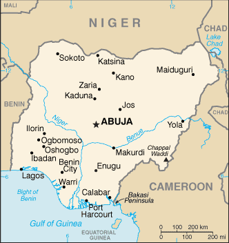
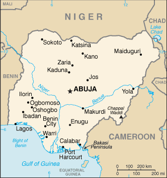

-
Introduction :: Nigeria
-
Background:British influence and control over what would become Nigeria and Africa's most populous country grew through the 19th century. A series of constitutions after World War II granted Nigeria greater autonomy. After independence in 1960, politics were marked by coups and mostly military rule, until the death of a military head of state in 1998 allowed for a political transition. In 1999, a new constitution was adopted and a peaceful transition to civilian government was completed. The government continues to face the daunting task of institutionalizing democracy and reforming a petroleum-based economy, whose revenues have been squandered through corruption and mismanagement. In addition, Nigeria continues to experience longstanding ethnic and religious tensions. Although both the 2003 and 2007 presidential elections were marred by significant irregularities and violence, Nigeria is currently experiencing its longest period of civilian rule since independence. The general elections of April 2007 marked the first civilian-to-civilian transfer of power in the country's history and the elections of 2011 were generally regarded as credible. The 2015 election is considered the most well run in Nigeria since the return to civilian rule, with the umbrella opposition party, the All Progressives Congress, defeating the long-ruling People's Democratic Party that had governed since 1999.
-
Geography :: Nigeria
-
Location:Western Africa, bordering the Gulf of Guinea, between Benin and CameroonGeographic coordinates:10 00 N, 8 00 EMap references:AfricaArea:total: 923,768 sq kmland: 910,768 sq kmwater: 13,000 sq kmcountry comparison to the world: 33Area - comparative:about six times the size of Georgia; slightly more than twice the size of CaliforniaLand boundaries:total: 4,477 kmborder countries (4): Benin 809 km, Cameroon 1975 km, Chad 85 km, Niger 1608 kmCoastline:853 kmMaritime claims:territorial sea: 12 nmexclusive economic zone: 200 nmcontinental shelf: 200-m depth or to the depth of exploitationClimate:varies; equatorial in south, tropical in center, arid in northTerrain:southern lowlands merge into central hills and plateaus; mountains in southeast, plains in northElevation:mean elevation: 380 melevation extremes: 0 m lowest point: Atlantic Ocean2419 highest point: Chappal WaddiNatural resources:natural gas, petroleum, tin, iron ore, coal, limestone, niobium, lead, zinc, arable landLand use:agricultural land: 78% (2011 est.)arable land: 37.3% (2011 est.) / permanent crops: 7.4% (2011 est.) / permanent pasture: 33.3% (2011 est.)forest: 9.5% (2011 est.)other: 12.5% (2011 est.)Irrigated land:2,930 sq km (2012)Population distribution:largest population of any African nation; significant population clusters are scattered throughout the country, with the highest density areas being in the south and southwestNatural hazards:periodic droughts; floodingEnvironment - current issues:serious overpopulation and rapid urbanization have led to numerous environmental problems; urban air and water pollution; rapid deforestation; soil degradation; loss of arable land; oil pollution - water, air, and soil have suffered serious damage from oil spillsEnvironment - international agreements:party to: Biodiversity, Climate Change, Climate Change-Kyoto Protocol, Desertification, Endangered Species, Hazardous Wastes, Law of the Sea, Marine Dumping, Marine Life Conservation, Ozone Layer Protection, Ship Pollution, Wetlandssigned, but not ratified: none of the selected agreementsGeography - note:the Niger River enters the country in the northwest and flows southward through tropical rain forests and swamps to its delta in the Gulf of Guinea
-
People and Society :: Nigeria
-
Population:203,452,505 (July 2018 est.)
note: estimates for this country explicitly take into account the effects of excess mortality due to AIDS; this can result in lower life expectancy, higher infant mortality, higher death rates, lower population growth rates, and changes in the distribution of population by age and sex than would otherwise be expected
country comparison to the world: 7Nationality:noun: Nigerian(s)adjective: NigerianEthnic groups:Hausa 27.4%, Igbo (Ibo) 14.1%, Yoruba 13.9%, Fulani 6.3%, Tiv 2.2%, Ibibio 2.2%, Ijaw/Izon 2%, Kanuri/Beriberi 1.7%, Igala 1%, other 28.9%, unspecified .2% (2013 est.)note: Nigeria, Africa's most populous country, is composed of more than 250 ethnic groupsLanguages:English (official), Hausa, Yoruba, Igbo (Ibo), Fulani, over 500 additional indigenous languagesReligions:Muslim 51.6%, Roman Catholic 11.2%, other Christian 35.7%, traditionalist .9%, unspecified .5% (2013 est.)Demographic profile:Nigeria’s population is projected to grow from more than 186 million people in 2016 to 392 million in 2050, becoming the world’s fourth most populous country. Nigeria’s sustained high population growth rate will continue for the foreseeable future because of population momentum and its high birth rate. Abuja has not successfully implemented family planning programs to reduce and space births because of a lack of political will, government financing, and the availability and affordability of services and products, as well as a cultural preference for large families. Increased educational attainment, especially among women, and improvements in health care are needed to encourage and to better enable parents to opt for smaller families.
Nigeria needs to harness the potential of its burgeoning youth population in order to boost economic development, reduce widespread poverty, and channel large numbers of unemployed youth into productive activities and away from ongoing religious and ethnic violence. While most movement of Nigerians is internal, significant emigration regionally and to the West provides an outlet for Nigerians looking for economic opportunities, seeking asylum, and increasingly pursuing higher education. Immigration largely of West Africans continues to be insufficient to offset emigration and the loss of highly skilled workers. Nigeria also is a major source, transit, and destination country for forced labor and sex trafficking.
Age structure:0-14 years: 42.45% (male 44,087,799 /female 42,278,742)15-24 years: 19.81% (male 20,452,045 /female 19,861,371)25-54 years: 30.44% (male 31,031,253 /female 30,893,168)55-64 years: 4.04% (male 4,017,658 /female 4,197,739)65 years and over: 3.26% (male 3,138,206 /female 3,494,524) (2018 est.)population pyramid: The World Factbook Field Image ModalAfrica :: Nigeria Print
The World Factbook Field Image ModalAfrica :: Nigeria Print Image DescriptionThis is the population pyramid for Nigeria. A population pyramid illustrates the age and sex structure of a country's population and may provide insights about political and social stability, as well as economic development. The population is distributed along the horizontal axis, with males shown on the left and females on the right. The male and female populations are broken down into 5-year age groups represented as horizontal bars along the vertical axis, with the youngest age groups at the bottom and the oldest at the top. The shape of the population pyramid gradually evolves over time based on fertility, mortality, and international migration trends.
Image DescriptionThis is the population pyramid for Nigeria. A population pyramid illustrates the age and sex structure of a country's population and may provide insights about political and social stability, as well as economic development. The population is distributed along the horizontal axis, with males shown on the left and females on the right. The male and female populations are broken down into 5-year age groups represented as horizontal bars along the vertical axis, with the youngest age groups at the bottom and the oldest at the top. The shape of the population pyramid gradually evolves over time based on fertility, mortality, and international migration trends.
For additional information, please see the entry for Population pyramid on the Definitions and Notes page under the References tab.Dependency ratios:total dependency ratio: 88.2 (2015 est.)youth dependency ratio: 83 (2015 est.)elderly dependency ratio: 5.1 (2015 est.)potential support ratio: 19.4 (2015 est.)Median age:total: 18.3 yearsmale: 18.1 yearsfemale: 18.6 years (2018 est.)country comparison to the world: 210Population growth rate:2.54% (2018 est.)country comparison to the world: 21Birth rate:35.2 births/1,000 population (2018 est.)country comparison to the world: 20Death rate:9.6 deaths/1,000 population (2018 est.)country comparison to the world: 46Net migration rate:-0.2 migrant(s)/1,000 population (2017 est.)country comparison to the world: 110Population distribution:largest population of any African nation; significant population clusters are scattered throughout the country, with the highest density areas being in the south and southwestUrbanization:urban population: 50.3% of total population (2018)rate of urbanization: 4.23% annual rate of change (2015-20 est.)Major urban areas - population:13.463 million Lagos, 3.82 million Kano, 3.383 million Ibadan, 2.919 million ABUJA (capital), 2.343 million Port Harcourt, 1.628 million Benin City (2018)Sex ratio:at birth: 1.05 male(s)/female (2017 est.)0-14 years: 1.05 male(s)/female (2017 est.)15-24 years: 1.04 male(s)/female (2017 est.)25-54 years: 1.05 male(s)/female (2017 est.)55-64 years: 0.95 male(s)/female (2017 est.)65 years and over: 0.91 male(s)/female (2017 est.)total population: 1.04 male(s)/female (2017 est.)Mother's mean age at first birth:20.3 years (2013 est.)note: median age at first birth among women 25-29
Maternal mortality rate:814 deaths/100,000 live births (2015 est.)country comparison to the world: 4Infant mortality rate:total: 63.3 deaths/1,000 live births (2018 est.)male: 69.1 deaths/1,000 live births (2018 est.)female: 57.3 deaths/1,000 live births (2018 est.)country comparison to the world: 13Life expectancy at birth:total population: 59.3 years (2018 est.)male: 57.5 years (2018 est.)female: 61.1 years (2018 est.)country comparison to the world: 211Total fertility rate:4.85 children born/woman (2018 est.)country comparison to the world: 16Contraceptive prevalence rate:13.4% (2016/17)Health expenditures:3.7% of GDP (2014)country comparison to the world: 167Physicians density:0.38 physicians/1,000 population (2009)Drinking water source:improved: urban: 80.8% of populationrural: 57.3% of populationtotal: 68.5% of populationunimproved: urban: 19.2% of populationrural: 42.7% of populationtotal: 31.5% of population (2015 est.)Sanitation facility access:improved: urban: 32.8% of population (2015 est.)rural: 25.4% of population (2015 est.)total: 29% of population (2015 est.)unimproved: urban: 67.2% of population (2015 est.)rural: 74.6% of population (2015 est.)total: 71% of population (2015 est.)HIV/AIDS - adult prevalence rate:2.8% (2017 est.)country comparison to the world: 20HIV/AIDS - people living with HIV/AIDS:3.1 million (2017 est.)country comparison to the world: 2HIV/AIDS - deaths:150,000 (2017 est.)country comparison to the world: 1Major infectious diseases:degree of risk: very high (2016)food or waterborne diseases: bacterial and protozoal diarrhea, hepatitis A and E, and typhoid fever (2016)vectorborne diseases: malaria, dengue fever, and yellow fever (2016)water contact diseases: leptospirosis and schistosomiasis (2016)animal contact diseases: rabies (2016)respiratory diseases: meningococcal meningitis (2016)aerosolized dust or soil contact diseases: Lassa fever (2016)Obesity - adult prevalence rate:8.9% (2016)country comparison to the world: 145Children under the age of 5 years underweight:31.5% (2016)country comparison to the world: 8Education expenditures:NALiteracy:definition: age 15 and over can read and write (2015 est.)total population: 59.6% (2015 est.)male: 69.2% (2015 est.)female: 49.7% (2015 est.)School life expectancy (primary to tertiary education):total: 9 years (2011)male: 9 years (2011)female: 8 years (2011)Unemployment, youth ages 15-24:total: 12.4% (2016 est.)male: NA (2016 est.)female: NA (2016 est.)country comparison to the world: 107 -
Government :: Nigeria
-
Country name:conventional long form: Federal Republic of Nigeriaconventional short form: Nigeriaetymology: named for the Niger River that flows through the west of the country to the Atlantic Ocean; from a native term "Ni Gir" meaning "River Gir"Government type:federal presidential republicCapital:name: Abujageographic coordinates: 9 05 N, 7 32 Etime difference: UTC+1 (6 hours ahead of Washington, DC, during Standard Time)Administrative divisions:36 states and 1 territory*; Abia, Adamawa, Akwa Ibom, Anambra, Bauchi, Bayelsa, Benue, Borno, Cross River, Delta, Ebonyi, Edo, Ekiti, Enugu, Federal Capital Territory*, Gombe, Imo, Jigawa, Kaduna, Kano, Katsina, Kebbi, Kogi, Kwara, Lagos, Nasarawa, Niger, Ogun, Ondo, Osun, Oyo, Plateau, Rivers, Sokoto, Taraba, Yobe, ZamfaraIndependence:1 October 1960 (from the UK)National holiday:Independence Day (National Day), 1 October (1960)Constitution:history: several previous; latest adopted 5 May 1999, effective 29 May 1999 (2018)amendments: proposed by the National Assembly; passage requires at least two-thirds majority vote of both houses and approval by the Houses of Assembly of at least two-thirds of the states; amendments to constitutional articles on the creation of a new state, fundamental constitutional rights, or constitution-amending procedures requires at least four-fifths majority vote by both houses of the National Assembly and approval by the Houses of Assembly in at least two-thirds of the states; passage of amendments limited to the creation of a new state require at least two-thirds majority by the proposing National Assembly house and approval by the Houses of Assembly in two-thirds of the states; amended several times, last in 2018 (2018)Legal system:mixed legal system of English common law, Islamic law (in 12 northern states), and traditional lawInternational law organization participation:accepts compulsory ICJ jurisdiction with reservations; accepts ICCt jurisdictionCitizenship:citizenship by birth: nocitizenship by descent only: at least one parent must be a citizen of Nigeriadual citizenship recognized: yesresidency requirement for naturalization: 15 yearsSuffrage:18 years of age; universalJudicial branch:highest courts: Supreme Court (consists of the chief justice and 15 justices)judge selection and term of office: judges appointed by the president upon the recommendation of the National Judicial Council, a 23-member independent body of federal and state judicial officials; judge appointments confirmed by the Senate; judges serve until age 70subordinate courts: Court of Appeal; Federal High Court; High Court of the Federal Capital Territory; Sharia Court of Appeal of the Federal Capital Territory; Customary Court of Appeal of the Federal Capital Territory; state court system similar in structure to federal systemExecutive branch:chief of state: President Maj. Gen. (ret.) Muhammadu BUHARI (since 29 May 2015); Vice President Oluyemi "Yemi" OSINBAJO (since 29 May 2015); note - the president is both chief of state, head of government, and commander-in-chief of the armed forceshead of government: President Maj.Gen. (ret.) Muhammadu BUHARI (since 29 May 2015); Vice President Oluyemi "Yemi" OSINBAJO (since 29 May 2015)cabinet: Federal Executive Council appointed by the president but constrained constitutionally to include at least one member from each of the 36 stateselections/appointments: president directly elected by qualified majority popular vote and at least 25% of the votes cast in 24 of Nigeria's 36 states; president elected for a 4-year term (eligible for a second term); election last held on 28-29 March 2015 (next to be held on 16 February 2019)election results: Muhammadu BUHARI elected president; percent of vote - Muhammadu BUHARI (APC) 54%, Goodluck JONATHAN (PDP) 45%, other 1%Legislative branch:description: bicameral National Assembly consists of:
Senate (109 seats - 3 each for the 36 states and 1 for Abuja-Federal Capital Territory; members directly elected in single-seat constituencies by simple majority vote to serve 4-year terms)
House of Representatives (360 seats; members directly elected in single-seat constituencies by simple majority vote to serve 4-year terms)elections:
Senate - last held on 28-29 March 2015 (next to be held on 16 February 2019)
House of Representatives - last held on 28-29 March 2015 (next to be held on 16 February 2019)election results:
Senate - percent of vote by party - NA; seats by party - APC 60, PDP 49; seats by party as of April 2017 - APC 66, PDP 43
House of Representatives - percent of vote by party - NA; seats by party - APC 225, PDP 125, other 10Political parties and leaders:Accord Party or ACC [Mohammad Lawal MALADO]
All Progressives Congress or APC [John Odigie OYEGUN]
All Progressives Grand Alliance or APGA [Victor C. UMEH]
Democratic Peoples Party or DPP [Biodun OGUNBIYI]
Labor Party or LP [Alhai Abdulkadir ABDULSALAM]
Peoples Democratic Party or PDP [Ali Modu SHERIFF]International organization participation:ACP, AfDB, AU, C, CD, D-8, ECOWAS, EITI (compliant country), FAO, G-15, G-24, G-77, IAEA, IBRD, ICAO, ICC (national committees), ICCt, ICRM, IDA, IDB, IFAD, IFC, IFRCS, IHO, ILO, IMF, IMO, IMSO, Interpol, IOC, IOM, IPU, ISO, ITSO, ITU, ITUC (NGOs), MIGA, MINURSO, MINUSMA, MONUSCO, NAM, OAS (observer), OIC, OPCW, OPEC, PCA, UN, UNAMID, UNCTAD, UNESCO, UNHCR, UNIDO, UNIFIL, UNISFA, UNITAR, UNMIL, UNMISS, UNOCI, UNWTO, UPU, WCO, WFTU (NGOs), WHO, WIPO, WMO, WTODiplomatic representation in the US:chief of mission: Ambassador Sylvanus Adiewere NSOFOR (since 29 November 2017)chancery: 3519 International Court NW, Washington, DC 20008telephone: [1] (202) 516-4277FAX: [1] (202) 362-6541consulate(s) general: Atlanta, New YorkDiplomatic representation from the US:chief of mission: Ambassador W. Stuart SYMINGTON (since 1 December 2016)embassy: Plot 1075 Diplomatic Drive, Central District Area, Abujamailing address: P. O. Box 5760, Garki, Abujatelephone: [234] (9) 461-4000FAX: [234] (9) 461-4036consulate(s): LagosFlag description:three equal vertical bands of green (hoist side), white, and green; the color green represents the forests and abundant natural wealth of the country, white stands for peace and unityNational symbol(s):eagle; national colors: green, whiteNational anthem:name: Arise Oh Compatriots, Nigeria's Call Obeylyrics/music: John A. ILECHUKWU, Eme Etim AKPAN, B.A. OGUNNAIKE, Sotu OMOIGUI and P.O. ADERIBIGBE/Benedict Elide ODIASEnote: adopted 1978; lyrics are a mixture of the five top entries in a national contest
-
Economy :: Nigeria
-
Economy - overview:
Nigeria is Sub Saharan Africa’s largest economy and relies heavily on oil as its main source of foreign exchange earnings and government revenues. Following the 2008-09 global financial crises, the banking sector was effectively recapitalized and regulation enhanced. Since then, Nigeria’s economic growth has been driven by growth in agriculture, telecommunications, and services. Economic diversification and strong growth have not translated into a significant decline in poverty levels; over 62% of Nigeria's over 180 million people still live in extreme poverty.
Despite its strong fundamentals, oil-rich Nigeria has been hobbled by inadequate power supply, lack of infrastructure, delays in the passage of legislative reforms, an inefficient property registration system, restrictive trade policies, an inconsistent regulatory environment, a slow and ineffective judicial system, unreliable dispute resolution mechanisms, insecurity, and pervasive corruption. Regulatory constraints and security risks have limited new investment in oil and natural gas, and Nigeria's oil production had been contracting every year since 2012 until a slight rebound in 2017.
President BUHARI, elected in March 2015, has established a cabinet of economic ministers that includes several technocrats, and he has announced plans to increase transparency, diversify the economy away from oil, and improve fiscal management, but has taken a primarily protectionist approach that favors domestic producers at the expense of consumers. President BUHARI ran on an anti-corruption platform, and has made some headway in alleviating corruption, such as implementation of a Treasury Single Account that allows the government to better manage its resources and a more transparent government payroll and personnel system that eliminated duplicate and "ghost workers." The government also is working to develop stronger public-private partnerships for roads, agriculture, and power.
Nigeria entered recession in 2016 as a result of lower oil prices and production, exacerbated by militant attacks on oil and gas infrastructure in the Niger Delta region, coupled with detrimental economic policies, including foreign exchange restrictions. GDP growth turned positive in 2017 as oil prices recovered and output stabilized.
GDP (purchasing power parity):$1.121 trillion (2017 est.)$1.112 trillion (2016 est.)$1.13 trillion (2015 est.)note: data are in 2017 dollars
country comparison to the world: 24GDP (official exchange rate):$376.4 billion (2017 est.) (2017 est.)GDP - real growth rate:0.8% (2017 est.)-1.6% (2016 est.)2.7% (2015 est.)country comparison to the world: 187GDP - per capita (PPP):$5,900 (2017 est.)$6,100 (2016 est.)$6,300 (2015 est.)note: data are in 2017 dollars
country comparison to the world: 166Gross national saving:18.2% of GDP (2017 est.)16% of GDP (2016 est.)12.3% of GDP (2015 est.)country comparison to the world: 110GDP - composition, by end use:household consumption: 80% (2017 est.)government consumption: 5.8% (2017 est.)investment in fixed capital: 14.8% (2017 est.)investment in inventories: 0.7% (2017 est.)exports of goods and services: 11.9% (2017 est.)imports of goods and services: -13.2% (2017 est.)GDP - composition, by sector of origin:agriculture: 21.1% (2016 est.)industry: 22.5% (2016 est.)services: 56.4% (2017 est.)Agriculture - products:cocoa, peanuts, cotton, palm oil, corn, rice, sorghum, millet, cassava (manioc, tapioca), yams, rubber; cattle, sheep, goats, pigs; timber; fishIndustries:crude oil, coal, tin, columbite; rubber products, wood; hides and skins, textiles, cement and other construction materials, food products, footwear, chemicals, fertilizer, printing, ceramics, steelIndustrial production growth rate:2.2% (2017 est.)country comparison to the world: 126Labor force:60.08 million (2017 est.)country comparison to the world: 10Labor force - by occupation:agriculture: 70%industry: 10%services: 20% (1999 est.)Unemployment rate:16.5% (2017 est.)13.9% (2016 est.)country comparison to the world: 178Population below poverty line:70% (2010 est.)Distribution of family income - Gini index:48.8 (2013)50.6 (1997)country comparison to the world: 21Budget:revenues: 12.92 billion (2017 est.)expenditures: 19.54 billion (2017 est.)Taxes and other revenues:3.4% (of GDP) (2017 est.)country comparison to the world: 220Budget surplus (+) or deficit (-):-1.8% (of GDP) (2017 est.)country comparison to the world: 99Public debt:21.8% of GDP (2017 est.)19.6% of GDP (2016 est.)country comparison to the world: 185Fiscal year:calendar yearInflation rate (consumer prices):16.5% (2017 est.)15.7% (2016 est.)country comparison to the world: 213Central bank discount rate:4.25% (31 December 2010)6% (31 December 2009)country comparison to the world: 96Commercial bank prime lending rate:17.58% (31 December 2017 est.)16.87% (31 December 2016 est.)country comparison to the world: 25Stock of narrow money:$36.13 billion (31 December 2017 est.)$37.02 billion (31 December 2016 est.)country comparison to the world: 58Stock of broad money:$36.13 billion (31 December 2017 est.)$37.02 billion (31 December 2016 est.)country comparison to the world: 58Stock of domestic credit:$84.66 billion (31 December 2017 est.)$88.2 billion (31 December 2016 est.)country comparison to the world: 58Current account balance:$10.38 billion (2017 est.)$2.714 billion (2016 est.)country comparison to the world: 21Exports:$1.146 billion (2017 est.)$34.7 billion (2016 est.)country comparison to the world: 154Exports - partners:India 30.6%, US 12.1%, Spain 6.6%, China 5.6%, France 5.5%, Netherlands 4.4%, Indonesia 4.4% (2017)Exports - commodities:petroleum and petroleum products 95%, cocoa, rubber (2012 est.)Imports:$32.67 billion (2017 est.)$35.24 billion (2016 est.)country comparison to the world: 63Imports - commodities:machinery, chemicals, transport equipment, manufactured goods, food and live animalsImports - partners:China 21.1%, Belgium 8.7%, US 8.4%, South Korea 7.5%, UK 4.4% (2017)Reserves of foreign exchange and gold:$38.77 billion (31 December 2017 est.)$25.84 billion (31 December 2016 est.)country comparison to the world: 45Debt - external:$40.96 billion (31 December 2017 est.)$31.41 billion (31 December 2016 est.)country comparison to the world: 73Stock of direct foreign investment - at home:$116.9 billion (31 December 2017 est.)$113.4 billion (31 December 2016 est.)country comparison to the world: 44Stock of direct foreign investment - abroad:$16.93 billion (31 December 2017 est.)$15.65 billion (31 December 2016 est.)country comparison to the world: 57Exchange rates:nairas (NGN) per US dollar -323.5 (2017 est.)253 (2016 est.)253 (2015 est.)192.73 (2014 est.)158.55 (2013 est.) -
Energy :: Nigeria
-
Electricity access:population without electricity: 95.5 million (2013)electrification - total population: 45% (2013)electrification - urban areas: 55% (2013)electrification - rural areas: 37% (2013)Electricity - production:29.35 billion kWh (2016 est.)country comparison to the world: 67Electricity - consumption:24.72 billion kWh (2016 est.)country comparison to the world: 69Electricity - exports:0 kWh (2016 est.)country comparison to the world: 178Electricity - imports:0 kWh (2016 est.)country comparison to the world: 180Electricity - installed generating capacity:10.52 million kW (2016 est.)country comparison to the world: 58Electricity - from fossil fuels:80% of total installed capacity (2016 est.)country comparison to the world: 83Electricity - from nuclear fuels:0% of total installed capacity (2017 est.)country comparison to the world: 157Electricity - from hydroelectric plants:19% of total installed capacity (2017 est.)country comparison to the world: 91Electricity - from other renewable sources:0% of total installed capacity (2017 est.)country comparison to the world: 203Crude oil - production:1.946 million bbl/day (2017 est.)country comparison to the world: 13Crude oil - exports:2.096 million bbl/day (2015 est.)country comparison to the world: 6Crude oil - imports:0 bbl/day (2015 est.)country comparison to the world: 177Crude oil - proved reserves:37.45 billion bbl (1 January 2018 est.)country comparison to the world: 10Refined petroleum products - production:35,010 bbl/day (2017 est.)country comparison to the world: 83Refined petroleum products - consumption:325,000 bbl/day (2016 est.)country comparison to the world: 41Refined petroleum products - exports:2,332 bbl/day (2015 est.)country comparison to the world: 102Refined petroleum products - imports:223,400 bbl/day (2015 est.)country comparison to the world: 31Natural gas - production:44.48 billion cu m (2017 est.)country comparison to the world: 18Natural gas - consumption:17.24 billion cu m (2017 est.)country comparison to the world: 41Natural gas - exports:27.21 billion cu m (2017 est.)country comparison to the world: 13Natural gas - imports:0 cu m (2017 est.)country comparison to the world: 169Natural gas - proved reserves:5.475 trillion cu m (1 January 2018 est.)country comparison to the world: 8Carbon dioxide emissions from consumption of energy:104 million Mt (2017 est.)country comparison to the world: 42
-
Communications :: Nigeria
-
Telephones - fixed lines:total subscriptions: 139,344 (2017 est.)subscriptions per 100 inhabitants: less than 1 (2017 est.)country comparison to the world: 134Telephones - mobile cellular:total subscriptions: 144,920,170 (2017 est.)subscriptions per 100 inhabitants: 76 (2017 est.)country comparison to the world: 9Telephone system:general assessment: further expansion and modernization of the fixed-line telephone network is needed; network quality remains a problem (2016)domestic: fixed-line subscribership remains less than 1 per 100 persons; mobile-cellular services growing rapidly, in part responding to the shortcomings of the fixed-line network; multiple cellular providers operate nationally with subscribership base over 80 per 100 persons (2016)international: country code - 234; landing point for the SAT-3/WASC fiber-optic submarine cable that provides connectivity to Europe and Asia; satellite earth stations - 3 Intelsat (2 Atlantic Ocean and 1 Indian Ocean) (2016)Broadcast media:nearly 70 federal government-controlled national and regional TV stations; all 36 states operate TV stations; several private TV stations operational; cable and satellite TV subscription services are available; network of federal government-controlled national, regional, and state radio stations; roughly 40 state government-owned radio stations typically carry their own programs except for news broadcasts; about 20 private radio stations; transmissions of international broadcasters are available (2007)Internet country code:.ngInternet users:total: 47,759,904 (July 2016 est.)percent of population: 25.7% (July 2016 est.)country comparison to the world: 14Broadband - fixed subscriptions:total: 74,004 (2017 est.)subscriptions per 100 inhabitants: less than 1 (2017 est.)country comparison to the world: 124
-
Transportation :: Nigeria
-
National air transport system:number of registered air carriers: 16 (2015)inventory of registered aircraft operated by air carriers: 73 (2015)annual passenger traffic on registered air carriers: 3,223,459 (2015)annual freight traffic on registered air carriers: 22,400,657 mt-km (2015)Civil aircraft registration country code prefix:5N (2016)Airports:54 (2013)country comparison to the world: 88Airports - with paved runways:total: 40 (2017)over 3,047 m: 10 (2017)2,438 to 3,047 m: 12 (2017)1,524 to 2,437 m: 9 (2017)914 to 1,523 m: 6 (2017)under 914 m: 3 (2017)Airports - with unpaved runways:total: 14 (2013)1,524 to 2,437 m: 2 (2013)914 to 1,523 m: 9 (2013)under 914 m: 3 (2013)Heliports:5 (2013)Pipelines:124 km condensate, 4045 km gas, 164 km liquid petroleum gas, 4441 km oil, 3940 km refined products (2013)Railways:total: 3,798 km (2014)standard gauge: 293 km 1.435-m gauge (2014)narrow gauge: 3,505 km 1.067-m gauge (2014)country comparison to the world: 52Roadways:total: 193,200 km (2004)paved: 28,980 km (2004)unpaved: 164,220 km (2004)country comparison to the world: 29Waterways:8,600 km (Niger and Benue Rivers and smaller rivers and creeks) (2011)country comparison to the world: 15Merchant marine:total: 583 (2017)by type: general cargo 14, oil tanker 83, other 486 (2017)country comparison to the world: 36Ports and terminals:major seaport(s): Bonny Inshore Terminal, Calabar, LagosLNG terminal(s) (export): Bonny Island
-
Military and Security :: Nigeria
-
Military expenditures:0.43% of GDP (2016)0.42% of GDP (2015)0.41% of GDP (2014)0.47% of GDP (2013)0.5% of GDP (2012)country comparison to the world: 146Military branches:Nigerian Armed Forces: Army, Navy, Air Force (2013)Military service age and obligation:18 years of age for voluntary military service; no conscription (2012)Maritime threats:the International Maritime Bureau reports the territorial and offshore waters in the Niger Delta and Gulf of Guinea as high risk for piracy and armed robbery of ships; in 2017, 33 commercial vessels were boarded or attacked compared with 36 attacks in 2016; in 2017, 20 ships were boarded 16 of which were underway, seven were fired upon, and 65 crew members were abducted; nearly half of all reports of vessels being fired upon occur in Nigerian waters; Nigerian pirates have extended the range of their attacks to as far away as Cote d'Ivoire and as far as 170 nm offshore
-
Terrorism :: Nigeria
-
Terrorist groups - home based:Boko Haram:
aim(s): replace the Nigerian Government with an Islamic state under strict sharia and, ultimately, establish an Islamic caliphate across Africa; avenge military offenses against the group and destroy any political or social activity associated with Western society; conducts attacks against primarily civilian and regional military targets
area(s) of operation: headquartered in the northeast
note: since 2009, fighters have killed tens of thousands of Nigerians during hundreds of attacks and disrupted trade and farming in the northeast, causing a risk of famine and displacing millions of people; violently opposes any political or social activity associated with Western society, including voting, attending secular schools, and wearing Western dress (April 2018)Islamic State of Iraq and ash-Sham (ISIS)-West Africa:
aim(s): implement ISIS's strict interpretation of Sharia; replace the Nigerian Government with an Islamic state
area(s) of operation: based primarily in the north along the border with Niger, with its largest presence in the northeast and the Lake Chad region; targets primarily regional military installations and civilians (April 2018) -
Transnational Issues :: Nigeria
-
Disputes - international:Joint Border Commission with Cameroon reviewed 2002 ICJ ruling on the entire boundary and bilaterally resolved differences, including June 2006 Greentree Agreement that immediately cedes sovereignty of the Bakassi Peninsula to Cameroon with a phaseout of Nigerian control within two years while resolving patriation issuesthe ICJ ruled on an equidistance settlement of Cameroon-Equatorial Guinea-Nigeria maritime boundary in the Gulf of Guinea, but imprecisely defined coordinates in the ICJ decision and a sovereignty dispute between Equatorial Guinea and Cameroon over an island at the mouth of the Ntem River all contribute to the delay in implementationonly Nigeria and Cameroon have heeded the Lake Chad Commission's admonition to ratify the delimitation treaty which also includes the Chad-Niger and Niger-Nigeria boundarieslocation of Benin-Niger-Nigeria tripoint is unresolvedRefugees and internally displaced persons:refugees (country of origin): 30,024 (Cameroon) (2018)IDPs: 2,026,602 (northeast Nigeria; Boko Haram attacks and counterinsurgency efforts in northern Nigeria; communal violence between Christians and Muslims in the middle belt region, political violence; flooding; forced evictions; cattle rustling; competition for resources) (2018)Illicit drugs:a transit point for heroin and cocaine intended for European, East Asian, and North American markets; consumer of amphetamines; safe haven for Nigerian narcotraffickers operating worldwide; major money-laundering center; massive corruption and criminal activity; Nigeria has improved some anti-money-laundering controls, resulting in its removal from the Financial Action Task Force's (FATF's) Noncooperative Countries and Territories List in June 2006; Nigeria's anti-money-laundering regime continues to be monitored by FATF
Africa ::
Nigeria